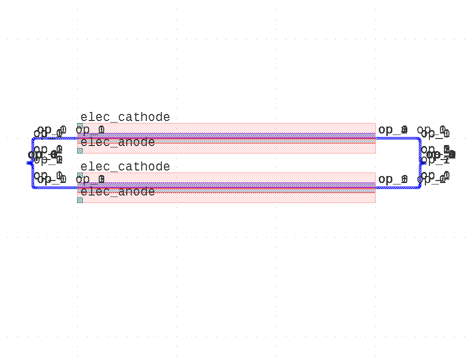

Module gpdk.components.mzm.mzm
Expand source code
from dataclasses import dataclass
from typing import Tuple
from fnpcell import all as fp
from gpdk.components.combiner.y_combiner import YCombiner
from gpdk.components.pn_phase_shifter.pn_phase_shifter import PnPhaseShifter
from gpdk.components.splitter.y_splitter import YSplitter
from gpdk.technology import WG, get_technology
@fp.pcell_class(band="C")
@dataclass(eq=False)
class Mzm(fp.PCell):
"""
Attributes:
p_width: defaults to 1
n_width: defaults to 1
np_offset: defaults to 0
wg_length: defaults to 25
phase_shifter_spacing: defaults to 100
splitter_wg_length: defaults to 100
waveguide_type: type of waveguide
pn_phase_shifter_0: instance of `PnPhaseShifter`, port_count=2, pin_count=2, required=False
pn_phase_shifter_1: instance of `PnPhaseShifter`, port_count=2, pin_count=2, required=False
y_splitter: instance of `YSplitter`, port_count=3, required=False
y_combiner: instance of `YCombiner`, port_count=3, required=False
port_names: defaults to ["op_0", "op_1"]
Examples:
```python
TECH = get_technology()
mzm = Mzm(wg_length=600, waveguide_type=TECH.WG.FWG.C.WIRE)
fp.plot(mzm)
```

"""
p_width: float = fp.PositiveFloatParam(default=1).as_field()
n_width: float = fp.PositiveFloatParam(default=1).as_field()
np_offset: float = fp.FloatParam(default=0).as_field()
wg_length: float = fp.PositiveFloatParam(default=25).as_field()
phase_shifter_spacing: float = fp.PositiveFloatParam(default=100).as_field()
splitter_wg_length: float = fp.FloatParam(default=100).as_field()
waveguide_type: WG.FWG.C = fp.WaveguideTypeParam(type=WG.FWG.C).as_field()
pn_phase_shifter_0: fp.IDevice = fp.DeviceParam(type=PnPhaseShifter, port_count=2, pin_count=2, required=False).as_field()
pn_phase_shifter_1: fp.IDevice = fp.DeviceParam(type=PnPhaseShifter, port_count=2, pin_count=2, required=False).as_field()
y_splitter: fp.IDevice = fp.DeviceParam(type=YSplitter, port_count=3, required=False).as_field()
y_combiner: fp.IDevice = fp.DeviceParam(type=YCombiner, port_count=3, required=False).as_field()
port_names: fp.IPortOptions = fp.PortOptionsParam(count=2, default=["op_0", "op_1"]).as_field()
def _default_waveguide_type(self):
return get_technology().WG.FWG.C.WIRE
def _default_pn_phase_shifter_0(self):
return PnPhaseShifter(
name="p1", p_width=self.p_width, n_width=self.n_width, np_offset=self.np_offset, wg_length=self.wg_length, waveguide_type=self.waveguide_type
)
def _default_pn_phase_shifter_1(self):
return PnPhaseShifter(
name="p2",
p_width=self.p_width,
n_width=self.n_width,
np_offset=self.np_offset,
wg_length=self.wg_length,
waveguide_type=self.waveguide_type,
transform=fp.translate(0, -self.phase_shifter_spacing),
)
def _default_y_splitter(self):
return YSplitter(
name="s", bend_radius=10, waveguide_type=self.waveguide_type, transform=fp.translate(-self.splitter_wg_length, -self.phase_shifter_spacing / 2)
)
def _default_y_combiner(self):
return YCombiner(
name="d",
bend_radius=10,
waveguide_type=self.waveguide_type,
transform=fp.translate(self.wg_length + self.splitter_wg_length, -self.phase_shifter_spacing / 2),
)
def build(self) -> Tuple[fp.InstanceSet, fp.ElementSet, fp.PortSet]:
insts, elems, ports = super().build()
# fmt: off
waveguide_type = self.waveguide_type
pn_phase_shifter_0 = self.pn_phase_shifter_0
pn_phase_shifter_1 = self.pn_phase_shifter_1
ysplitter = self.y_splitter
ycombiner = self.y_combiner
port_names = self.port_names
phase_shifter_top = pn_phase_shifter_0
phase_shifter_bottom = pn_phase_shifter_1
splitter = ysplitter
ports += splitter["op_0"].with_name(port_names[0])
ycombiner = ycombiner
ports += ycombiner["op_2"].with_name(port_names[1])
insts += fp.Linked(
link_type=waveguide_type,
links=[
splitter["op_2"] >> phase_shifter_top["op_0"],
splitter["op_1"] >> phase_shifter_bottom["op_0"],
phase_shifter_top["op_1"] >> ycombiner["op_0"],
phase_shifter_bottom["op_1"] >> ycombiner["op_1"],
],
ports=[],
)
# fmt: on
return insts, elems, ports
if __name__ == "__main__":
from pathlib import Path
gds_file = Path(__file__).parent / "local" / Path(__file__).with_suffix(".gds").name
library = fp.Library()
TECH = get_technology()
# =============================================================
# fmt: off
library += Mzm()
# fmt: on
# =============================================================
fp.export_gds(library, file=gds_file)
# fp.plot(library)Classes
class Mzm (name: str = None, bands: Optional[FrozenSet[fnpcell.interfaces.IBand]] = None, patches: Tuple[fnpcell.interfaces.IElement, ...] = (), port_names: Sequence[Union[None, str, fnpcell.interfaces.Hidden]] = ('op_0', 'op_1'), transform: fnpcell.transform.Affine2D = None, p_width: float = 1, n_width: float = 1, np_offset: float = 0, wg_length: float = 25, phase_shifter_spacing: float = 100, splitter_wg_length: float = 100, waveguide_type: gpdk.technology.wg.WG.FWG.C = None, pn_phase_shifter_0: fnpcell.interfaces.ICellRef = None, pn_phase_shifter_1: fnpcell.interfaces.ICellRef = None, y_splitter: fnpcell.interfaces.ICellRef = None, y_combiner: fnpcell.interfaces.ICellRef = None)-
Attributes
p_width- defaults to 1
n_width- defaults to 1
np_offset- defaults to 0
wg_length- defaults to 25
phase_shifter_spacing- defaults to 100
splitter_wg_length- defaults to 100
waveguide_type- type of waveguide
pn_phase_shifter_0- instance of
PnPhaseShifter, port_count=2, pin_count=2, required=False pn_phase_shifter_1- instance of
PnPhaseShifter, port_count=2, pin_count=2, required=False y_splitter- instance of
YSplitter, port_count=3, required=False y_combiner- instance of
YCombiner, port_count=3, required=False port_names- defaults to ["op_0", "op_1"]
Examples:
TECH = get_technology() mzm = Mzm(wg_length=600, waveguide_type=TECH.WG.FWG.C.WIRE) fp.plot(mzm)
Expand source code
class Mzm(fp.PCell): """ Attributes: p_width: defaults to 1 n_width: defaults to 1 np_offset: defaults to 0 wg_length: defaults to 25 phase_shifter_spacing: defaults to 100 splitter_wg_length: defaults to 100 waveguide_type: type of waveguide pn_phase_shifter_0: instance of `PnPhaseShifter`, port_count=2, pin_count=2, required=False pn_phase_shifter_1: instance of `PnPhaseShifter`, port_count=2, pin_count=2, required=False y_splitter: instance of `YSplitter`, port_count=3, required=False y_combiner: instance of `YCombiner`, port_count=3, required=False port_names: defaults to ["op_0", "op_1"] Examples: ```python TECH = get_technology() mzm = Mzm(wg_length=600, waveguide_type=TECH.WG.FWG.C.WIRE) fp.plot(mzm) ```  """ p_width: float = fp.PositiveFloatParam(default=1).as_field() n_width: float = fp.PositiveFloatParam(default=1).as_field() np_offset: float = fp.FloatParam(default=0).as_field() wg_length: float = fp.PositiveFloatParam(default=25).as_field() phase_shifter_spacing: float = fp.PositiveFloatParam(default=100).as_field() splitter_wg_length: float = fp.FloatParam(default=100).as_field() waveguide_type: WG.FWG.C = fp.WaveguideTypeParam(type=WG.FWG.C).as_field() pn_phase_shifter_0: fp.IDevice = fp.DeviceParam(type=PnPhaseShifter, port_count=2, pin_count=2, required=False).as_field() pn_phase_shifter_1: fp.IDevice = fp.DeviceParam(type=PnPhaseShifter, port_count=2, pin_count=2, required=False).as_field() y_splitter: fp.IDevice = fp.DeviceParam(type=YSplitter, port_count=3, required=False).as_field() y_combiner: fp.IDevice = fp.DeviceParam(type=YCombiner, port_count=3, required=False).as_field() port_names: fp.IPortOptions = fp.PortOptionsParam(count=2, default=["op_0", "op_1"]).as_field() def _default_waveguide_type(self): return get_technology().WG.FWG.C.WIRE def _default_pn_phase_shifter_0(self): return PnPhaseShifter( name="p1", p_width=self.p_width, n_width=self.n_width, np_offset=self.np_offset, wg_length=self.wg_length, waveguide_type=self.waveguide_type ) def _default_pn_phase_shifter_1(self): return PnPhaseShifter( name="p2", p_width=self.p_width, n_width=self.n_width, np_offset=self.np_offset, wg_length=self.wg_length, waveguide_type=self.waveguide_type, transform=fp.translate(0, -self.phase_shifter_spacing), ) def _default_y_splitter(self): return YSplitter( name="s", bend_radius=10, waveguide_type=self.waveguide_type, transform=fp.translate(-self.splitter_wg_length, -self.phase_shifter_spacing / 2) ) def _default_y_combiner(self): return YCombiner( name="d", bend_radius=10, waveguide_type=self.waveguide_type, transform=fp.translate(self.wg_length + self.splitter_wg_length, -self.phase_shifter_spacing / 2), ) def build(self) -> Tuple[fp.InstanceSet, fp.ElementSet, fp.PortSet]: insts, elems, ports = super().build() # fmt: off waveguide_type = self.waveguide_type pn_phase_shifter_0 = self.pn_phase_shifter_0 pn_phase_shifter_1 = self.pn_phase_shifter_1 ysplitter = self.y_splitter ycombiner = self.y_combiner port_names = self.port_names phase_shifter_top = pn_phase_shifter_0 phase_shifter_bottom = pn_phase_shifter_1 splitter = ysplitter ports += splitter["op_0"].with_name(port_names[0]) ycombiner = ycombiner ports += ycombiner["op_2"].with_name(port_names[1]) insts += fp.Linked( link_type=waveguide_type, links=[ splitter["op_2"] >> phase_shifter_top["op_0"], splitter["op_1"] >> phase_shifter_bottom["op_0"], phase_shifter_top["op_1"] >> ycombiner["op_0"], phase_shifter_bottom["op_1"] >> ycombiner["op_1"], ], ports=[], ) # fmt: on return insts, elems, portsAncestors
- fnpcell.pdk.pcell.PCell
- fnpcell.cell.cell_ref.CellRef
- fnpcell.mixin.transform_mixin.TransformMixin
- fnpcell.interfaces.ICellRef
- fnpcell.interfaces.IUpdatable
- fnpcell.interfaces.IElement
- fnpcell.interfaces.IRunnable
- fnpcell.interfaces.IAffineTransformable
Class variables
var n_width : floatvar np_offset : floatvar p_width : floatvar phase_shifter_spacing : floatvar pn_phase_shifter_0 : fnpcell.interfaces.ICellRefvar pn_phase_shifter_1 : fnpcell.interfaces.ICellRefvar port_names : Sequence[Union[None, str, fnpcell.interfaces.Hidden]]var splitter_wg_length : floatvar waveguide_type : gpdk.technology.wg.WG.FWG.Cvar wg_length : floatvar y_combiner : fnpcell.interfaces.ICellRefvar y_splitter : fnpcell.interfaces.ICellRef
Methods
def build(self) ‑> Tuple[fnpcell.pdk.collection.InstanceSet, fnpcell.pdk.collection.ElementSet, fnpcell.pdk.collection.PortSet]-
Abstract method must be implemented to build a pcell.
Expand source code
def build(self) -> Tuple[fp.InstanceSet, fp.ElementSet, fp.PortSet]: insts, elems, ports = super().build() # fmt: off waveguide_type = self.waveguide_type pn_phase_shifter_0 = self.pn_phase_shifter_0 pn_phase_shifter_1 = self.pn_phase_shifter_1 ysplitter = self.y_splitter ycombiner = self.y_combiner port_names = self.port_names phase_shifter_top = pn_phase_shifter_0 phase_shifter_bottom = pn_phase_shifter_1 splitter = ysplitter ports += splitter["op_0"].with_name(port_names[0]) ycombiner = ycombiner ports += ycombiner["op_2"].with_name(port_names[1]) insts += fp.Linked( link_type=waveguide_type, links=[ splitter["op_2"] >> phase_shifter_top["op_0"], splitter["op_1"] >> phase_shifter_bottom["op_0"], phase_shifter_top["op_1"] >> ycombiner["op_0"], phase_shifter_bottom["op_1"] >> ycombiner["op_1"], ], ports=[], ) # fmt: on return insts, elems, ports